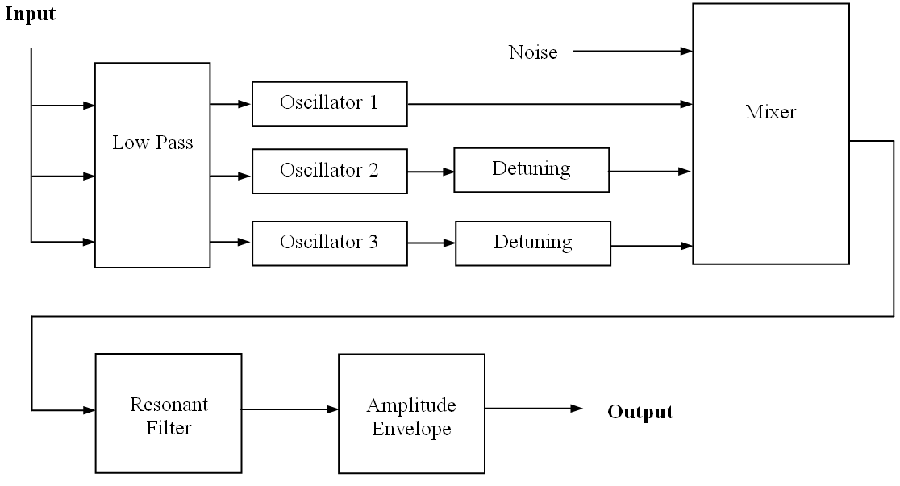

moogThis extension implements a minimoog emulator.
load "moog/moog" ;; these demos do not autoload exec moog-default-demo() exec moog-articulation-demo() exec moog-glide-demo() exec moog-filter-demo() exec moog-sine-demo() exec moog-tri-demo()
The moog.lsp library gives the Nyquist user easy access to "classic"
synthesizer sounds through an emulation of the Minimoog Synthesizer.
Unlike modular Moogs that were very large, the Minimoog was the first
successful and commonly used portable synthesizer. The trademark filter attack
was unique and easily recognizable. The goal of this Nyquist instrument is not
only to provide the user with default sounds, but also to give control over
many of the "knobs" found on the Minimoog. In this implementation, these
parameters are controlled using keywords. The input to the moog
instrument is a user-defined sequence of notes, durations, and articulations
that simulate notes played on a keyboard. These are translated into
control voltages that drive multiple oscillators, similar to the Voltage
Controlled Oscillator or VCO found in the original analog Moog.
The basic functionality of the Minimoog has been implemented, including the often-used "glide". The glide feature essentially low-pass filters the control voltage sequence in order to create sweeps between notes. Figure 1 is a simplified schematic of the data flow in the Moog. The control lines have been omitted.

Figure 1: System diagram for Minimoog emulator.
The most recognizable feature of the Minimoog is its resonant filter, a Four-Pole Ladder Filter invented by Robert Moog. It is simply implemented in a circuit with four transistors and provides an outstanding 24 dB/octave rolloff. It is modeled here using the built-in Nyquist resonant filter. One of the Moog filter features is a constant Q, or center frequency to bandwidth ratio. This is implemented and the user can control the Q.
The user can control many parameters using keywords. Their default values, acceptable ranges, and descriptions are shown below. The defaults were obtained by experimenting with the official Minimoog software synthesizer by Arturia.
Oscillator Parameters and Default Values
range-osc1: 2 range-osc2: 1 range-osc3: 3These parameters control the octave of each oscillator. A value of 1 corresponds to the octave indicated by the input note. A value of 3 is two octaves above the fundamental. The allowable range is 1 to 7.
detun2: -.035861 detun3: .0768Detuning of two oscillators adds depth to the sound. A value of 1 corresponds to an increase of a single semitone and a -1 corresponds to a decrease in a semitone. The range is -1 to 1.
shape-osc1: *saw-table* shape-osc2: *saw-table* shape-osc3: *saw-table*Oscilators can use any wave shape. The default sawtooth waveform is a built-in Nyquist variable. Other waveforms can be defined by the user.
volume-osc1: 1 volume-osc2: 1 volume-osc3: 1These parameters control the relative volume of each oscillator. The range is any
FLONUM greater than or equal to zero.
Noise Parameters and Default Values
noiselevel: .05This parameter controls the relative volume of the noise source. The range is any
FLONUM greater than or equal to zero.
filter-cutoff: 768The cutoff frequency of the filter in given in Hz. The range is zero to 20,000 Hz.
Q: 2Q is the ratio of center frequency to bandwidth. It is held constant by making the bandwidth a function of frequency. The range is any
FLONUM greater than zero.
contour: .65Contour controls the range of the transient frequency sweep from a high to low cutoff frequency when a note is played. The high frequency is proportional to contour. A contour of 0 removes this sweep. The range is 0 to 1.
filter-attack: .0001Filter attack controls the attack time of the filter, i.e. the time to reach the high cutoff frequency. The range is any
FLONUM greater
than zero (seconds).
filter-decay: .5Filter decay controls the decay time of the filter, i.e. the time of the sweep from the high to low cutoff frequency. The range is any
FLONUM greater than zero (seconds).
filter-sustain: .8Filter sustain controls the percentage of the filter cutoff frequency that the filter settles on following the sweep. The range is 0 to 1.
amp-attack: .01This parameter controls the amplitude envelope attack time, i.e. the time to reach maximum amplitude. The range is any
FLONUM greater than zero (seconds).
amp-decay: 1This parameter controls the amplitude envelope decay time, i.e. the time between the maximum and sustain volumes. The range is any
FLONUM greater than zero (seconds).
amp-sustain: 1This parameter controls the amplitude envelope sustain volume, a fraction of the maximum. The range is 0 to 1.
amp-release: 0This parameter controls the amplitude envelope release time, i.e. the time it takes between the sustain volume and 0 once the note ends. The duration controls the overall length of the sound. The range of
amp-release is any FLONUM greater than zero (seconds).
Other Parameters and Default Values
glide: 0Glide controls the low-pass filter on the control voltages. This models the glide knob on a Minimoog. A higher value corresponds to a lower cutoff frequency and hence a longer "glide" between notes. A value of 0 corresponds to no glide. The range is zero to 10.
Input Format
A single note or a series of notes can be input to the Moog instrument
by defining a list with the following format:
list(list(frequency, duration, articulation), ... )
where frequency is a FLONUM in steps, duration is the duration
of each note in seconds (regardless of the release time of the amplifier),
and articulation is a percentage of the duration that a sound will be
played, representing the amount of time that a key is pressed. The filter
and amplitude envelopes are only triggered if a note is played when
the articulation of the previous note is less than 1, or a key is not down at
the same time. This Moog instrument is a monophonic instrument, so only
one note can sound at a time. The release section of the amplifier is
triggered when the articulation is less than 1 at the time
(duration * articulation).
Sound 1 (default parameters):
set s = {{24 .5 .99} {26 .5 .99} {28 .5 .99}
{29 .5 .99} {31 2 1}}
play moog(s)
Sound 2 (articulation, with amplitude release):
set s = {{24 .5 .5} {26 .5 1} {28 .5 .25} {29 .5 1} {31 1 .8}}
play moog(s, amp-release: .2)
Sound 3 (glide):
set s = {{24 .5 .5} {38 .5 1} {40 .5 .25}
{53 .5 1} {55 2 1} {31 2 .8} {36 2 .8}}
play moog(s, amp-release: .2, glide: .5)
Sound 4 (keyword parameters): Filter attack and decay are purposely longer than notes being played with articulation equal to 1.
set s = {{20 .5 1} {27 .5 1} {26 .5 1} {21 .5 1}
{20 .5 1} {27 .5 1} {26 .5 1} {21 .5 1}}
play moog(s, shape-osc1: *tri-table*, shape-osc2: *tri-table*,
filter-attack: 2, filter-decay: 2,
filter-cutoff: 300, contour: .8, glide: .2, Q: 8)
Sound 5: This example illustrates the ability to completely define a new synthesizer with different parameters creating a drastically different sound. Sine waves are used for wavetables. There is a high value for glide.
define function my-moog(freq)
return moog(freq,
range-osc1: 3, range-osc2: 2, range-osc3: 4,
detun2: -.043155, detun3: .015016,
noiselevel: 0,
filter-cutoff: 400, Q: .1, contour: .0000001,
filter-attack: 0, filter-decay: .01, filter-sustain: 1,
shape-osc1: *sine-table*, shape-osc2: *sine-table*,
shape-osc3: *sine-table*, volume-osc1: 1, volume-osc2: 1,
volume-osc3: .1, amp-attack: .1, amp-decay: 0,
amp-sustain: 1, amp-release: .3, glide: 2)
set s = {{80 .4 .75} {28 .2 1} {70 .5 1} {38 1 .5}}
play my-moog(s)
Sound 6: This example has another variation on the default parameters.
set s = {{24 .5 .99} {26 .5 .99} {28 .5 .99}
{29 .5 .99} {31 2 1}}
play moog(s, shape-osc1: *tri-table*, shape-osc2: *tri-table*,
filter-attack: .5, contour: .5)